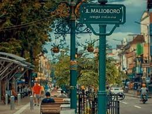
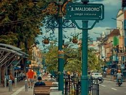
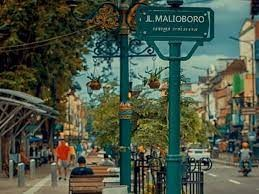

Malioboro merupakan suatu kawasan yang merupakan gabungan dari tiga jalan yaitu Jalan Margo Utomo, Jalan Malioboro dan Jalan Margo Mulyo. Kawasan yang legendaris tersebut membentang dari Tugu Jogja sepanjang 2,5 kilometer hingga ke perempatan Kantor Pos Yogyakarta. Keberadaannya yang tepat di titik 0 kilometer Kota Jogja ini membuat wisatawan sangat mudah untuk mencapainya. Untuk memasuki kawasan Malioboro, wisatawan tak dikenakan biaya sama sekali alias gratis. Wisatawan hanya perlu membayar biaya parkir saja.
Penamaan Malioboro sendiri memiliki dua versi yang dipercaya masyarakat hingga kini. Versi pertama menyebutkan bahwa nama tersebut didapat dari seorang bangsawan bernama Marlborough ketika Indonesia berada dibawah kekuasaan Kerajaan Inggris pada tahun 1811 sampai 1816. Sedangkan pada versi kedua, nama tersebut diambil dari bahasa sansekerta yang dapat diartikan sebagai karangan bunga. Hal ini memang tak aneh, karena dulu ketika Kraton Yogyakarta tengah mengadakan upacara ataupun acara hajatan, Jalan Malioboro selalu ramai dipenuhi dengan karangan bunga.
Dahulu jalan Malioboro merupakan jalan yang sepi, hanya dipenuhi pohon asam di bagian kiri dan kanan jalan. Jalan tersebut hanya digunakan ketika seseorang hendak menuju ke Keraton Yogyakarta. Keadaan pun berubah ketika warga Tionghoa datang di bumi Jogja. Pindahnya warga Tionghoa ke kawasan Malioboro kala itu ternyata memberikan berkah tersendiri. Kawasan yang mulanya sepi, diubah menjadi kawasan bisnis yang mulai ramai dihiasi oleh pertokoan. Kemajuan yang begitu pesat di kala itu, membuat kawasan perdagangan pun meluas hingga ke utara tepatnya di Stasiun Tugu. Sehingga kini Malioboro menjadi destinasi wisata yang wajib untuk dikunjungi jika datang ke wilayah Yogyakarta.
